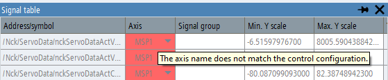

As long as a loaded trace session file is only used for visualization, the application does not check the validity of the configuration so as not to disturb the display of previously recorded data with error messages. The validity check only takes place when a new trace recording is started.
If you click on the "Start trace" symbol or softkey in the user interface, the system checks whether the trace configuration can be started on the machine. A pop-up error message is displayed if any errors are identified. After closing the pop-up message, the errors detected in the signal table are indicated by the fact that the relevant data fields have a red background color. If you hover the mouse cursor over a red data field, the tooltip will show precise information about the cause of the error.
| Note |
Note that not only the variables in the signal table can have validity errors, but also the start or stop trigger variables or the sampling rates. If the symbol and the softkey for "Start trace" are deactivated, trace recording cannot be started until all validity check errors have been rectified. |
| Note |
If a trace configuration is loaded in compatibility mode, validity checks are only possible to a limited extent. Furthermore, errors in the validity check cannot be corrected since the configuration cannot be edited. In a few cases, the application offers you the option of trying to start recording despite the detected errors. However, it is recommended to create a new trace configuration. |
If there is a red field with the axis identifier in an NC/PLC trace configuration, the reason can be as follows:
The axis identifier in the configuration has changed and the identifier loaded from the session file no longer exists (it is also possible that the axis number has not been configured).
The axis identifier loaded from the file exists, but has a different axis number.
Both axis number and name are correct, but the axis has been assigned a different physical unit. The cause may be an axis type change (rotary axis/linear axis), or a unit system change (mm/in).
These errors can be corrected by selecting another axis parameter for the variable. If only the unit has changed, you may also re-select the same axis to confirm the new axis type (the unit will then be automatically updated).
If the address field of an NC or PLC variable has a red background, then the reasons can be the following:
The variable is not supported on the control presently being used, as the configuration was created for a different controller type.
The properties of the variables (e.g. data type, unit) in the variable database of the control presently being used are different from the data loaded from the session file.
A PLC address in the configuration is not readable on the machine.
In some cases, the "Start trace" symbol may be grayed out immediately after loading a session file, without a detailed validity check having been carried out. This can happen if a configuration was saved without selecting axis parameters for all servo variables. In this case, the axis identifier field of the involved variable(s) is empty and red, and the tooltip of the "Start trace" symbol indicates that the configuration is invalid.
In a drive trace configuration, if the drive object name field is highlighted in red, then the reason may be the following:
The drive object with the loaded bus and DO address does not exist in the system, or a drive object of a different type is located at that address.
The name of the drive or the assigned axis is different from the names saved in the session file.
The unit of the drive parameter is different from the unit saved in the session file.